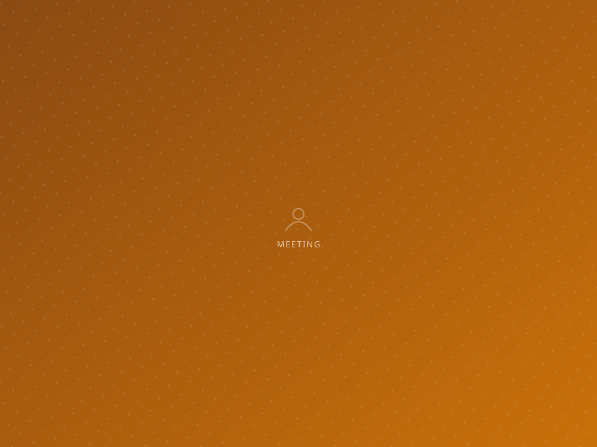
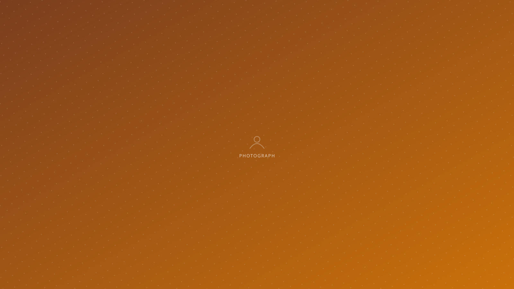

Safety, dignity and the means to stand on your own
Comprehensive care and support for women survivors of gender based violence — delivered inside the community, alongside the work that helps prevent it.
Leaving violence is not one decision
Gender based violence is usually a long situation rather than a single event — bound up with where a woman lives, what she earns, who looks after her children, and what she believes will happen if she speaks.
Help that exists only at a distance quietly excludes the women who need it most. Ours is built the other way round: close by, familiar, and prepared to stay.

Addressing Gender Based Violence in Communities
Comprehensive care and support to women survivors, delivered within the communities where they live.
A woman may need to talk safely; to know what her options actually are; to have someone go with her to a police station, a hospital or a court; to work out where she and her children would live. Very often she needs all of it, across many months.

How we work with women
She decides. Our role is to make sure a woman knows her real options and to support the choice she makes.
Confidentiality. In a close-knit neighbourhood, discretion is not a formality. It is safety.
No deadline. Women often approach, withdraw and return months later. That is normal, not failure. The door stays open.
We go with her. Being present changes how a woman is treated when she faces an institution.

Violence rarely ends with a single incident, and leaving it is rarely a single decision. What women need is somebody who stays.Prayatn · women development
Independence is what makes safety last
A woman who cannot support herself has fewer real choices, whatever the law says. Skill development sits at the centre of what Prayatn is for.
For women who have left violent situations, an income of their own is often the difference between a decision that holds and one that reverses within a year.
Ways to support this work
- Counsellors who can offer regular, confidential time.
- Women lawyers to advise on rights, protection orders and maintenance.
- Trainers in skills that lead to real earning.
- Funding for counselling, legal costs and emergency support.
Prayatn runs on people who decided to show up
An hour a week, a professional skill, a child’s school year, a box of books — there is a way for you to be part of this.